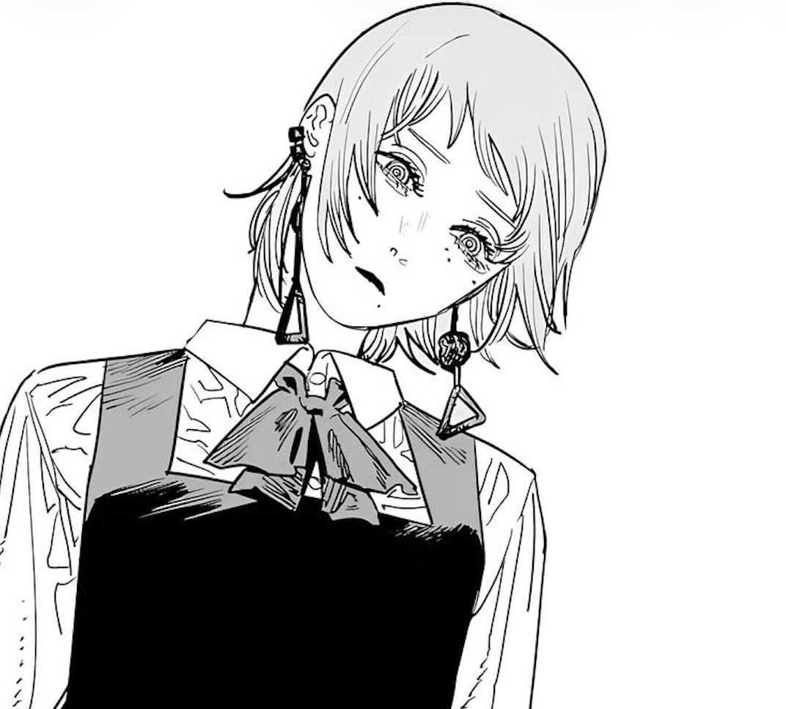

Hi, I'm Joshua Park.
UC Berkeley • B.S. Electrical Engineering & Computer Sciences • 2026 - 2028

UC Berkeley • B.S. Electrical Engineering & Computer Sciences • 2026 - 2028
Won Research Lab — Irvine, CA
Feb 2025 – May 2025
Researched liquid-solid-vapor interactions and transport phenomena for applications in electronics cooling, energy efficiency, and water systems.
Used MATLAB and Python to model and visualize cold plate performance data, and applied NSGA-II optimization to identify Pareto-optimal designs across competing thermal objectives. Contributed to a paper submitted to the IEEE ITherm conference.
Charger Rocketry — Cypress, CA
Feb 2025 – May 2026
Co-founded Cypress College's first team-based collaborative engineering design project focused on the research, development, and construction of a solid-propellant rocket, built in collaboration with STEM² and MESA.
Led day-to-day operations which included recruitment, event planning, competition proposals, and meetings. Managed cross-functional collaboration across engineering subteams for design, testing, and safety planning.
Cypress College Science Tutoring Center — Cypress, CA
Aug 2025 – Jun 2026
Provided one-on-one and drop-in tutoring across mechanics, electricity and magnetism, general chemistry, and lab-based problem solving.
Broke down challenging STEM concepts into clear, step-by-step explanations to improve student understanding and exam readiness.
Jan 2026
Stack: PostgreSQL, Node.js
A music-market simulation platform where users invest virtual credits in emerging artists based on growth signals such as monthly listeners, album performance, and social engagement, built around gamified music discovery combining artist analytics, prediction mechanics, and portfolio-style interaction.
Designed a PostgreSQL schema to store artist profiles, user portfolios, virtual transactions, and time-series performance metrics for tracking artist growth over time.
CS 61A — UC Berkeley
Stack: Python
Built an interpreter for a subset of the Scheme language in Python — implementing the read-eval-print loop, special forms, lexical scoping with proper environment frames, and tail-call handling.
Grab a copy of my latest resume here.
View Resume (PDF)I'm Joshua and I am currently a transfer student at UC Berkeley, pursuing a B.S. in Electrical Engineering and Computer Sciences. I am passionate about building efficient and innovate systems that bridge artificial intelligence, machine learning, and human insight.
My work thus far combines machine learning and computer vision with scientific computation. As a machine learning research assistant at Won Research Lab, I used Python and MATLAB to model cold plate thermal performance and applied NSGA-II multi-objective optimization to find Pareto-optimal designs, contributing to a paper submitted to the IEEE ITherm conference. More recently I've been building Earlysignal.fm, a music-market simulation where users invest virtual credits in emerging artists based on growth signals, designing the PostgreSQL schema for portfolios, transactions, and time-series artist metrics.
When I'm not coding, I enjoy being outside. Whether it be skateboarding, snowboarding, playing tennis and basketball, or hiking with friends, I find that being active helps me recharge and stay motivated. I also love going to the gym and lifting weights as I find that a healthy body leads to a healthy mind. However, I am not someone that lives outdoors. Whenever I am stuck indoor or want to take things slower, I enjoy playing the piano and coding new projects!
Open to SWE / ML research roles & collaborations.